Южное кольцо и северные кулуары. Мамай.
( 14, 15 апреля )
УчаСНЕГи зимней субботы: Лёха, Лёха, Макс, Андрей, Женя, Ира,
Аня, Вера.
Еще в районе были: отец и сын Малюки из Улан-Удэ,
загадочные и веселые спелеологи из Иркутска.
УчаСНЕГи летнего воскресенья : те же имена + Артем, Дима, Маша,
Алиса.
Однодневные заходчики: инструктор Илья, лыжники Артем и Наташа.
В планах на эти выходные было дойти по гребням до Южной вершины Мамая.
Однако совсем не весенний снег с утра закрывал красоты Хамар-Дабана и просто
так гулять по горам в молоке совсем не хотелось. Так что поставили задачу-минимум
затропить на Три Березы и раскатать кулуары. Коллектив с задачей справился -
затропили, раскатали и даже на втором разе спустили лавину из свежего снега в
Третьем кулуаре. Отделались легким испугом. Потом грелись в кунге в компании
неугомонных спелеологов. |
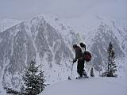 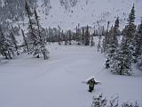 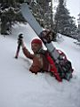
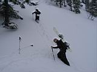 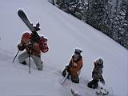 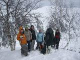
А в это время два Алексея тропили гребень от Трех Берез к вершинам Мамая.
Оптимизма в выполнении задачи-максимум добавляло наличие снегоступов и хорошая
видимость. Дошли до западной вершины, отдохнули, попили чай с видом на Осиновку и
двинули на юга. Слева обширный цирк, с гребня кажется совсем плоским. Справа этакие
воронки в сторону Осиновки - сверху широкие поля, а внизу узкие и глубокие кулуары. |
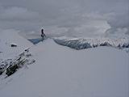 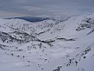 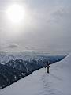
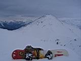 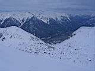 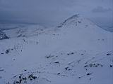
Диджеи радиостанции "Кунг" сообщали сводки с лавинных полей и призывали к скорейшему
и безопасному возвращению. Но как-то не хотелось спешить - ветер успокоился, солнце
сквозь облака все еще ярко светит, а до зачета остался один подъем по гребню. С Южной
вершины открываются новые виды - на гору Поляна, цирк под горой, перевал из ущелья
Мамай в долину реки Выдринной. Радиостанция "Южная" передает готовность к спуску
по заранее присмотренному кулуару. |
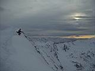 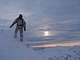 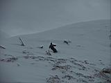 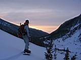
Полетели ходко. Ожидали встретить жесткий фирн, а словили крепко лежавший свежий снег!
От такой радости даже половину кулуара пропустили, увлеклись близлежащим склоном.
Выкатили в цирк. Пересекли русло ручья и траверсом по склону. Между елок и по лавинникам
выкатили под Высокий цирк и все тем же траверсом, с небольшими пешими подъемами,
доехали до кунга. Пообщались со спелеологами. Нет, у них точно что-то есть :) За день
нарыли кучу пещер в снегу!
Вечерняя программа: внезапный День Рожденья Пестова Алексея был отмечен в теплой
зимухе и в дружной компании любителей крепких напитков и простой закуски-залипона. Подошла
компания сноубордистов под руководством Артема из Слюдянки, раскинули палатку неподалеку.
Ожидался еще ночной заход-приход парочки лыжников, но они где-то потерялись.
Если ночью с потолка капает - быть хорошей погоде :) Так оно и есть, SunDay, воскресенье.
Передоз ультрафиолета и водяное охлаждение ног. Экскурсия в рукотворные пещеры.
Прыжки с камня, что возле тропы на Три Березы. Потом часть компании практиковала китайский
даунхил по Большому кулуару. Гонка за целиной, в итоге все были внизу - и участники, и целина.
Спустили аккуратно три лавинки. |
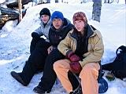 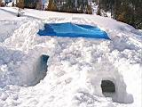 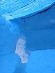
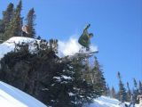 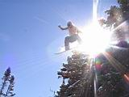 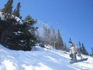 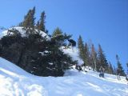
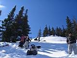 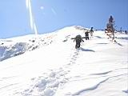 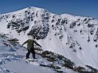 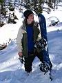 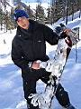
Другая часть компании практиковала разведку новых катальных мест - немного вверх
по гребню и направо. Где-то тут начинается пара кулуаров в Северный цирк. Нашли,
раскатали и тоже спустили несколько лавинок. Рядом выкатили Малюки, и им досталось
экстрима - малой прокувыркался со скалы. Дальше едем по ручью, тут сплошной могул,
но снег лежит крепко.
Кто-то еще пошел покататься недалеко, кто-то уже начал собирать рюкзаки, а кто-то опять
полез на Три Березы, догонять вновь пришедших лыжников. Догнали и решили повторить
северный маневр, благо там некатанных мест еще много оставалось. В общем, если не
траверсить и не закладывать резкие дуги, то свежий снег по подложке не сходит. А если
и сходит, то ползет медленно и по нему даже можно ехать. Кулуар, по которому хотели
катануть, сошел сверху до низу от первой дуги, пришлось по широкому гребню выкатывать,
но и там весь снег сползал. Особенно долго и упорно сгоняла снег наша лыжница - новичек
в деле внетрассового катания по стланнику, между камней и кустов, при уклоне 45 градусов
и слабо держащемся снеге. Обделались испугом :) |
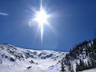 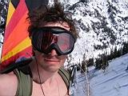 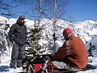 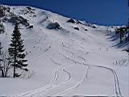
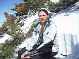 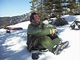 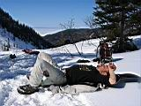
Немного побатонили после спуска и выкатили из северного цирка по могульному ручью.
Правда один разведчик взял левее и приехал к речке, как раз напротив зимовья, разведал
очень удобный маршрут возвращения. Большая часть катального народа в это время уже
подходила к электричке, а мы вчетвером возращаемся сегодня поздно, на машине Артема.
Выкат по тропе до самой трассы - лыжебординг рулит, особенно с двумя рюкзаками
- вывозим зимние вещи :)
Мамайский сезон пора закрывать, так что есть предложение на 21-22 апреля собраться
и покататься или позагорать в южном или северном цирках! Думаю там вполне безопасно..
А то потом начнутся Мунки, Тальцинские и медведы. Не до Мамая будет :) |
PS: Андрей, ждем-с твои фоты! Выкладывай и ссылку в гостевуху пиарь :)
PS: Лёха, зимовье на Осиновке чертовски далеко вверх по реке, смысла нет...
PS: Кто последний раз видел в зимухе чашку-контейнер пластмассовый с синей крышкой?
Подскажите пожалуйста.. Мож кто по ошибке себе в рюкзак кинул?
Вознаграждение внутри контейнера, если что :)
Апрель 2007
Текст: Алексей Белокрылов
Фото: Алексей Белокрылов, Алексей Пестов, Андрей Савченко
|